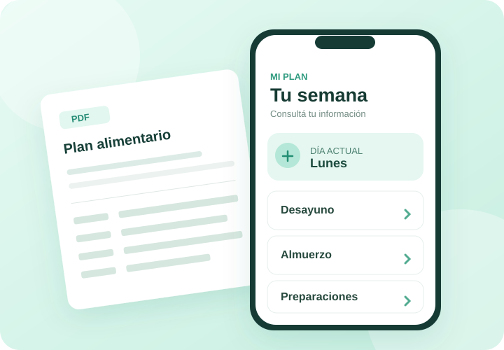
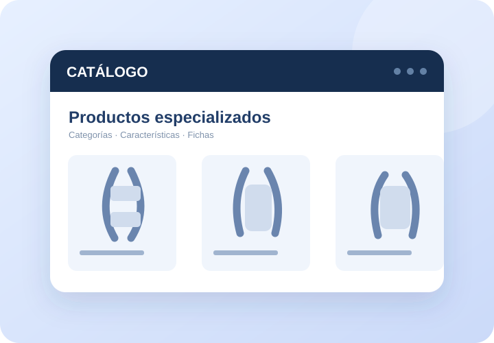

Desarrollo web
Sitios y experiencias web que presentan servicios, información y productos de forma clara y adaptable.
ESTUDIO DE SOLUCIONES DIGITALES
Transformamos información, productos y servicios en experiencias digitales claras, accesibles y diseñadas para cada negocio.
NUESTRAS SOLUCIONES
SOLUCIONES POR ACTIVIDAD
No empezamos hablando de tecnología. Empezamos por lo que tu actividad necesita comunicar, organizar o mostrar.

Del PDF a una experiencia de consulta sencilla para el día a día.
Conocer la solución
Productos, categorías e información técnica en un entorno claro.
Conocer la solución
Un catálogo y presentaciones comerciales adaptadas a cada entorno.
Conocer la solución
Tu propuesta gastronómica, presentada para verse desde cualquier pantalla.
Conocer la soluciónEstas son las áreas con soluciones demostrables hoy. Podemos conversar también sobre otras actividades.
LO QUE HACEMOS
Detrás de las distintas aplicaciones hay una misma idea: convertir contenido y procesos de presentación en herramientas digitales más fáciles de usar.
Sitios y experiencias web que presentan servicios, información y productos de forma clara y adaptable.
Transformación de documentos y contenidos existentes en formatos digitales de consulta.
Adaptación de información de productos para catálogos, escaparates web y formatos de canales comerciales.
UNA FORMA SIMPLE DE EMPEZAR
Sin fórmulas cerradas para todos. Cada proyecto parte del contenido, el público y los objetivos de la actividad.
Empecemos por tu ideaEntendemos qué necesitás mostrar, organizar o facilitar.
Definimos el alcance y la experiencia digital adecuada.
Construimos una solución adaptada a tu contenido y la preparamos para su publicación.
EMPECEMOS A CONVERSAR
¿Tenés un catálogo, un menú, un documento o una idea? Contanos qué necesitás.